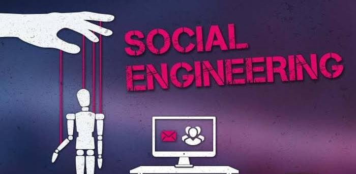

Social engineering attacks happen in one or more steps. A perpetrator first investigates the intended victim to gather necessary background information, such as potential points of entry and weak security protocols, needed to proceed with the attack. Then, the attacker moves to gain the victim's trust and provide stimuli for subsequent actions that break security practices, such as revealing sensitive information or granting access to critical resources.
Baiting
Scareware
Pretexting
Phishing
Spear Phishing
Social engineering attack techniques
Social engineering attacks come in many different forms and can be performed anywhere where human interaction is involved. The following are the five most common forms of digital social engineering assaults.
-
Baiting
As its name implies, baiting attacks use a false promise to pique a victim's greed or curiosity. They lure users into a trap that steals their personal information or inflicts their systems with malware. The most reviled form of baiting uses physical media to disperse malware. For example, attackers leave the bait-typically malware-infected flash drives-in conspicuous areas where potential victims are certain to see them (e.g., bathrooms, elevators, the parking lot of a targeted company). The bait has an authentic look to it, such as a label presenting it as the company's payroll list. Victims pick up the bait out of curiosity and insert it into a work or home computer, resulting in automatic malware installation on the system. Baiting scams don't necessarily have to be carried out in the physical world. Online forms of baiting consist of enticing ads that lead to malicious sites or that encourage users to download a malware-infected application.
-
Scareware
Scareware involves victims being bombarded with false alarms and fictitious threats. Users are deceived to think their system is infected with malware, prompting them to install software that has no real benefit (other than for the perpetrator) or is malware itself. Scareware is also referred to as deception software, rogue scanner software and fraudware. A common scareware example is the legitimate-looking popup banners appearing in your browser while surfing the web, displaying such text such as, "Your computer may be infected with harmful spyware programs." It either offers to install the tool (often malware-infected) for you, or will direct you to a malicious site where your computer becomes infected. Scareware is also distributed via spam email that doles out bogus warnings, or makes offers for users to buy worthless/harmful services.
-
Pretexting
Here an attacker obtains information through a series of cleverly crafted lies. The scam is often initiated by a perpetrator pretending to need sensitive information from a victim so as to perform a critical task. The attacker usually starts by establishing trust with their victim by impersonating co-workers, police, bank and tax officials, or other persons who have right-to-know authority. The pretexter asks questions that are ostensibly required to confirm the victim's identity, through which they gather important personal data. All sorts of pertinent information and records is gathered using this scam, such as social security numbers, personal addresses and phone numbers, phone records, staff vacation dates, bank records and even security information related to a physical plant.
-
Phishing
As one of the most popular social engineering attack types, phishing scams are email and text message campaigns aimed at creating a sense of urgency, curiosity or fear in victims. It then prods them into revealing sensitive information, clicking on links to malicious websites, or opening attachments that contain malware. An example is an email sent to users of an online service that alerts them of a policy violation requiring immediate action on their part, such as a required password change. It includes a link to an illegitimate website-nearly identical in appearance to its legitimate version-prompting the unsuspecting user to enter their current credentials and new password. Upon form submittal the information is sent to the attacker. Given that identical, or near-identical, messages are sent to all users in phishing campaigns, detecting and blocking them are much easier for mail servers having access to threat sharing platforms.
-
Spear phishing
This is a more targeted version of the phishing scam whereby an attacker chooses specific individuals or enterprises. They then tailor their messages based on characteristics, job positions, and contacts belonging to their victims to make their attack less conspicuous. Spear phishing requires much more effort on behalf of the perpetrator and may take weeks and months to pull off. They're much harder to detect and have better success rates if done skillfully. A spear phishing scenario might involve an attacker who, in impersonating an organization's IT consultant, sends an email to one or more employees. It's worded and signed exactly as the consultant normally does, thereby deceiving recipients into thinking it's an authentic message. The message prompts recipients to change their password and provides them with a link that redirects them to a malicious page where the attacker now captures their credentials.

Social engineering prevention
Social engineers manipulate human feelings, such as curiosity or fear, to carry out schemes and draw victims into their traps. Therefore, be wary whenever you feel alarmed by an email, attracted to an offer displayed on a website, or when you come across stray digital media lying about. Being alert can help you protect yourself against most social engineering attacks taking place in the digital realm. Moreover, the following tips can help improve your vigilance in relation to social engineering hacks.
- Don't open emails and attachments from suspicious sources
- Use multifactor authentication
- Be wary of tempting offers
- Keep your antivirus/antimalware software updated